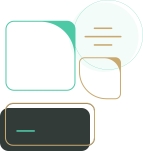
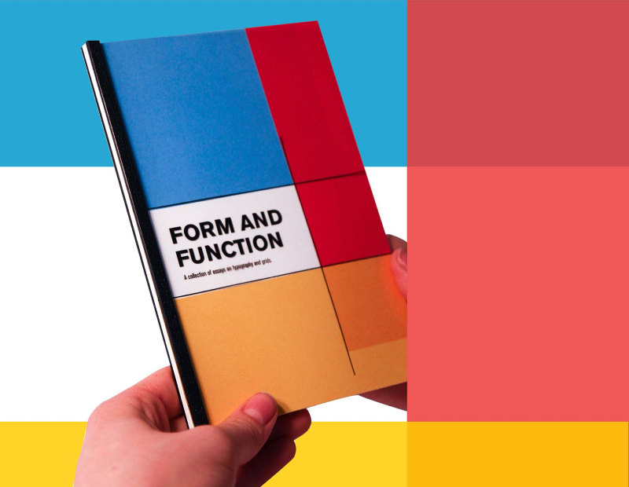
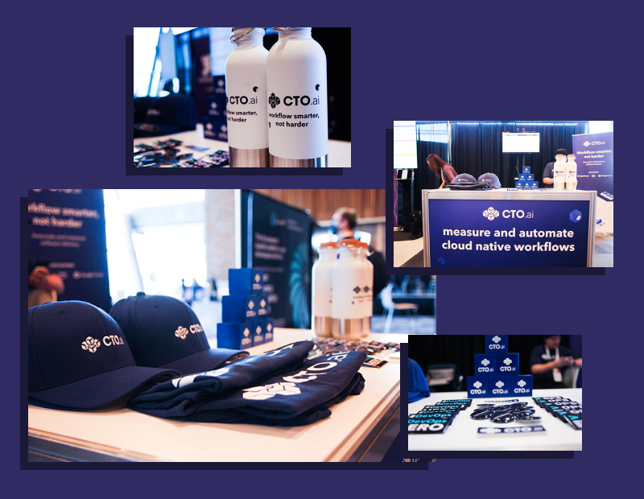
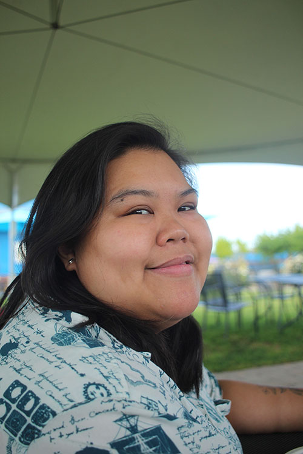

Designer
Almira
Silva
My love for design, learning, and storytelling is something I consistently strive to implement in my work.

Projects
-
01
Workflows.sh Branding
Logo Design · Brand Design · Design System
-

02
Form and Function Book
Publication Design · Typography · Prepress
-

03
Open Source Summit Booth Design
Marketing Design · Print Design · Branding

Hey there! I'm Almira
I'm a designer with more than 5 years of experience building brands and collaborating with teams. I believe in a narrative and purpose-drive approach to design. As a naturally curious person and avid learner, I always strive to find unique and efficient solutions to problem spaces. I am passionate about developing projects that can create an emotional connection to their audiences, and whether it is digital or physical, I find that the potential to connect exists within every idea.
- Brand Design
- Graphic Design
- UX/UI Design
- Web Design
- HTML & CSS